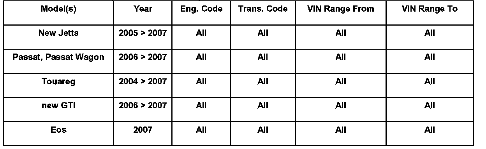

Windshield Wipers - Smear or Streak Windshield
92 06 03May 19, 2006
2012048/4

Affected Vehicles
Supersedes Technical Bulletin Group 92 number 06-02, dated May 18, 2006 due to updated model years. (2012048/3).
Condition
Customer States "Windshield Wipers Make One Intermittent Sweep Across Windshield While Driving".
When the windshield wipers are set in the "Automatic" position, and when it IS NOT raining, the wipers may swipe across the windshield Once.
Technical Background
The Rain/Light Recognition Sensor -G397- is light sensitive and is responsive to change in ultra violet (UV) rays. A change in light may cause the windshield wipers to do a single swipe, which is known as a "Tunnel Wipe" function. When the rain/light recognition sensor -G397- detects a light to dark transition when the rain sensor function is turned ON, one wipe cycle will be performed if the elapsed time after the previous wipe cycle is greater than 15 seconds. This communication is received via the Local Interconnect Network (LIN) data bus. The communication for the rain/light recognition sensor takes place over a LIN bus.
The light sensors and rain sensors are always active when terminal 15 is ON. The Function Can Not be coded off.
Tip:
For additional information about this subject see the Electrical System Design and Function Self Study Program Course for the vehicle being serviced.
Production Solution
No production change required.
Service Procedure
Tip:
This is a normal operating function of the system when in operation.
Warranty
Information only.
Required Parts and Tools
No Special Tools required.
No Special Parts required. Always see ETKA for the latest part(s) information.